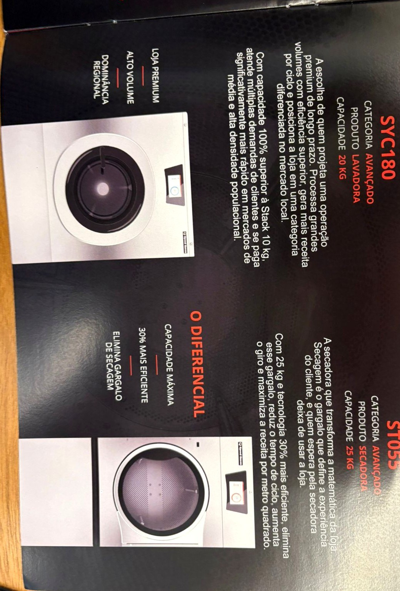

Visão geralLinha completa

AvançadoSYC180 · ST055

Entrada · IntermediárioSTACK · STAX-X
Imagens extraídas do folder oficial Speed Queen / Alliance (jun/2025) — podem ser trocadas por renders em alta do fabricante.
Aço de alta espessura, inox martensítico, suspensão avançada e eletrônica desenvolvida para as operações mais duras. Projetada para operar 12, 16, 18 horas por dia, todos os dias do ano — com custo total de propriedade em 10 anos substancialmente menor que o de qualquer concorrente genérico.

Imagens extraídas do folder oficial Speed Queen / Alliance (jun/2025) — podem ser trocadas por renders em alta do fabricante.
Lavadora compacta e eficiente, em espaço reduzido. Ponto de entrada ideal para quem quer iniciar com menor exposição de capital. Loja padrão, bom custo-benefício, payback cadenciado.
A escolha mais frequente de quem já estudou a operação. Atende lavanderias de médio porte (4 a 6 máquinas), com ótimo equilíbrio entre investimento e retorno. Payback acelerado.
Para operações que querem maximizar receita por ciclo. Atende múltiplas demandas, se paga mais rápido em mercados de média e alta densidade. Alto volume e dominância regional.
A secadora que transforma a matemática da loja. Com 25 kg e tecnologia 30% mais eficiente, elimina o gargalo de secagem, reduz o tempo de ciclo e aumenta a receita por metro quadrado.
Cada equipamento conectado a uma plataforma proprietária: dados em tempo real, diagnóstico remoto com reset automático, manutenção preditiva, 50+ relatórios e API aberta.
Máquinas genéricas funcionam até a primeira falha grave — sem peças no país, sem suporte real. Máquina parada é receita que não volta. Confiabilidade é a razão pela qual a Speed Queen existe.
Falamos qual configuração equilibra capital, espaço e retorno para a sua loja.